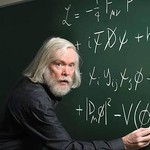

NJNU Particle Physics
NJNU Particle Physics
People
Events
Contact
Preprints
Light
Dark
Automatic
Recent & Upcoming Events
Please contact
Andrew Fowlie
if you cannot access the slides or recordings.
2022
Jan 19, 2022 4:00 PM China Standard Time
Roberto Trotta
2021
Primordial Black Holes as a dark matter candidate
Primordial Black Holes (PBHs) are black holes formed in the early Universe, for instance from the collapse of large density …
Dec 15, 2021 4:00 PM China Standard Time
Anne Green
Why is the Higgs boson SM-like?
The properties of the Higgs boson discovered in 2012 at the LHC are consistent with the predictions of the Standard Model (SM), to …
Dec 8, 2021 3:00 PM China Standard Time
Howie Haber
Deep Learning & the future of the LHC search program
We discuss how Deep Learning could be used to help our quest for new physics at the LHC. After introducing the basic ingredients, we …
Dec 1, 2021 4:30 PM China Standard Time
Maurizio Pierini
Video
Hunting for sub-GeV dark matter with gas-based detectors
In this talk, I’ll discuss ideas for new approaches in the hunt for light dark matter was gas-based detectors. Firstly, I’ll discuss …
Nov 24, 2021 3:00 PM China Standard Time
Chris McCabe
Slides
Video
Searching for sub-GeV dark matter
The non-observation of evidence for conventional dark matter candidates such as WIMPs has led to a growing interest in less explored …
Nov 17, 2021 3:00 PM China Standard Time
Felix Kahlhoefer
Unsupervised Machine Learning in Astrophysical Data
Large astrophysical surveys provide us with a wealth of data that has important implications for fundamental physics questions. Fully …
Nov 10, 2021 10:00 AM China Standard Time
Matthew Buckley
PDF
Slides
Video
B anomalies and the flavor of SMEFT
Recent data in B-meson decays indicate a coherent pattern of deviations from the Standard Model predictions. These …
Oct 27, 2021 3:00 PM China Standard Time
Gino Isidori
Slides
Video
Venturing into the neutrino fog
The last few years have seen the largest underground dark matter searches rapidly approach their purported ultimate sensitivity limit, …
Oct 20, 2021 3:00 PM China Standard Time
Ciaran O'Hare
PDF
Code
Slides
Video
Forward and Inverse LHC Simulations with Neural Networks
LHC physics is a unique field in the sense that we compare vast and highly complex data sets with precise first-principles predictions. …
Oct 13, 2021 3:00 PM China Standard Time
Tilman Plehn
PDF
Slides
Video
Gravitational instantons, CP asymmetry, and axions
Quantum gravity effects are typically considered irrelevant for particle physics and its phenomenology. Contrary to this, I will argue …
Sep 29, 2021 10:00 AM China Standard Time
Archil Kobakhidze
PDF
Slides
Video
Dark Matter Puzzles from Indirect Searches
The nature and origin of dark matter is one of the key unresolved questions of fundamental physics. Astrophysical and cosmological data …
Jun 17, 2021 9:00 AM China Standard Time
Tracy Slatyer
Slides
Video
FASER and Forward Physics at the LHC
For decades, the focus of searches for new particles at the energy frontier has been on heavy particles and high $p_T$. Recently, …
Jun 10, 2021 11:00 AM China Standard Time
Jonathan Feng
Slides
Video
Dark Matter Capture in Stars
The capture of dark matter in stars provides a cosmic laboratory in which to study the nature of dark matter particles and their …
Jun 3, 2021 11:00 AM China Standard Time
Nicole Bell
Slides
Video
Direct detection of dark matter - a theorist’s perspective
Measurement of a signal in direct detection of a hypothetical particle constituting the dark matter in the Universe would provide …
May 6, 2021 3:00 PM China Standard Time
Leszek Roszkowski
PDF
Slides
Video
New Paradigms for New Physics Searches at the LHC with Machine Learning
In recent years, there has been growing interest and many new ideas for anomaly detection and model-independent new physics searches at …
Apr 29, 2021 9:00 AM China Standard Time
David Shih
Slides
Video
The Hubble tension and early dark energy
We’ve known since the late 1920s that the Universe is expanding. However, the expansion rate currently inferred from measurements …
Apr 22, 2021 9:00 AM China Standard Time
Marc Kamionkowski
Slides
Video
Axion Dark Matter
The axion is a hypothetical particle motivated by the strong CP problem of elementary particle physics and by the dark matter problem …
Apr 15, 2021 9:00 AM China Standard Time
Pierre Sikivie
Slides
Video
Muon $g-2$ and physics beyond the Standard Model
For two decades, the Brookhaven $g-2$ measurement has remained a tantalizing deviation from the SM prediction and a potential …
Apr 2, 2021 3:00 PM China Standard Time
Dominik Stöckinger
PDF
Slides
Fundamental Physics from Gravitational Waves
The recent observations of gravitational waves have opened new opportunities in astrophysics, cosmology and fundamental physics, some …
Mar 25, 2021 3:00 PM China Standard Time
John Ellis
Slides
Video

Cite
×